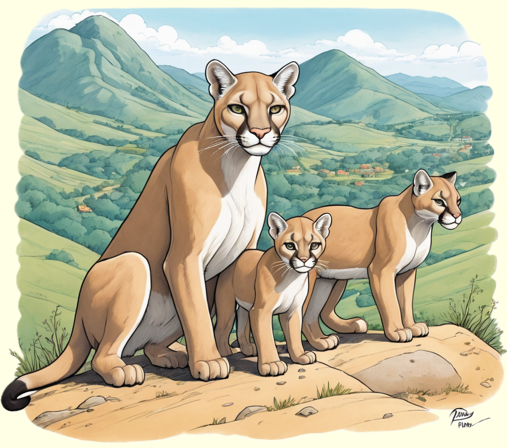

Der Puma, ein geschickter Jäger und Athlet der Wildnis, fasziniert mit seiner schlanken Gestalt und seiner beeindruckenden Sprungkraft.
Entdecke die spannende Welt dieses eleganten Raubtiers und erfahre, wie es in den Wäldern und Gebirgen Amerikas lebt.

Elegante Raubkatzen Nordamerikas
Pumas, auch als Berglöwen oder Kuguar bezeichnet, sind elegante Raubkatzen, die in den weitläufigen Landschaften Amerikas beheimatet sind. Mit ihrem schlanken Körperbau, kurzem Fell und charakteristischem Gesichtsausdruck sind sie geschickte Jäger und hervorragend an ihre Umgebung angepasst. Pumas haben eine breite Verbreitung von Nord- bis Südamerika und bewohnen verschiedene Lebensräume, darunter Wälder, Graslandschaften und Gebirgsregionen.
Pumas sind Einzelgänger und territorial. Ihr ausgeprägter Jagdinstinkt und ihre beeindruckende Geschwindigkeit machen sie zu effizienten Räubern. Mit kräftigen Hinterbeinen können sie erstaunliche Sprünge über Hindernisse machen und ihre Beute geschickt verfolgen. Pumas sind Fleischfresser und ernähren sich von einer Vielzahl von Tieren, darunter Hirsche, Nagetiere und gelegentlich auch größere Beutetiere wie Guanakos oder Kojoten. Ihre Anpassungsfähigkeit und ihre Rolle als Spitzenprädatoren prägen die ökologischen Zusammenhänge in den amerikanischen Wildnisgebieten.
Solitäre Jäger mit instinktiver Brutpflege
Pumas sind nachtaktive Jäger, die sich geschickt an ihre Beute heranschleichen, um sie mit einem schnellen Angriff zu überraschen. Ihre scharfen Krallen und Zähne ermöglichen es ihnen, ihre Beute effektiv zu erlegen. Pumas sind territorial und markieren ihr Revier durch Kratzspuren an Bäumen und das Aussenden von Duftmarken. Die Paarung erfolgt im Winter, und nach einer Tragzeit von etwa drei Monaten bringt das Weibchen ein bis vier Junge zur Welt.
Die Puma-Kinder, auch als Kätzchen bezeichnet, werden liebevoll von ihrer Mutter aufgezogen und sind in den ersten Monaten auf ihre Fürsorge angewiesen. Nach einigen Monaten beginnen die Jungen, selbständiger zu werden und lernen von ihrer Mutter die Jagdtechniken. Pumas spielen eine entscheidende Rolle im Gleichgewicht der Natur, indem sie die Populationen anderer Tierarten kontrollieren und dadurch die Biodiversität in ihren Lebensräumen unterstützen. Die elegante Lebensweise und das Überlebensgeschick der Pumas machen sie zu faszinierenden Vertretern der amerikanischen Tierwelt.